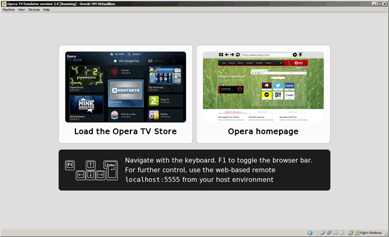
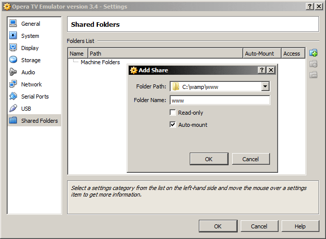
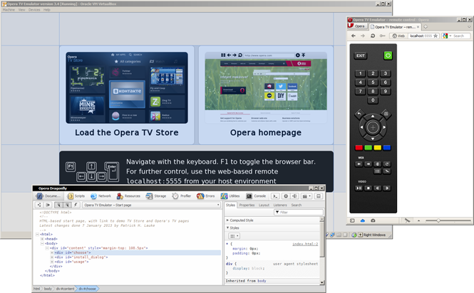
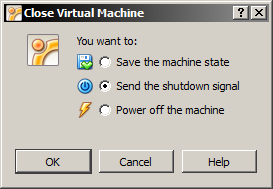

Opera TV Emulator user guide
This guide has been updated to cover the Opera TV Emulator 3.4. For previous versions of the emulator, please refer to the documentation contained inside the emulator's .zip package.
About the Opera TV Emulator
The Opera TV Emulator allows web developer to test HTML5 and CE-HTML content for TVs and other appliances running the Opera Devices SDK, as well as HTML-based applications for the Opera TV Store. It comes packaged as an Oracle VirtualBox image and can be run on Windows, Mac and Linux.
- Installation
- The Opera TV Emulator start page
- Installing the H.264 codec
- Navigation
- Accessing local files
- Debugging with Opera Dragonfly
- Settings
- Closing the emulator
- Support
Installation
The Opera TV Emulator is provided as a preconfigured Oracle VirtualBox machine and disk image. This ensures a test environment for web developers that is as close to a real device as possible. To use the emulator:
- Install the Oracle VirtualBox application.
- Download the Opera TV Emulator package.
- Extract the package to an appropriate folder on your development machine.
- Open the
.vboxfile from the package. This will automatically add the virtual machine to the Oracle VirtualBox Manager and start the emulator.
You can also install the emulator from within the VirtualBox Manager itself: in the Machine menu, choose Add and open the .vbox file.
Some Linux distributions already ship with an open source version of VirtualBox. The Opera TV Emulator package was specifically developed for the Oracle VirtualBox binary version, and may not work reliably with any other version.
The Opera TV Emulator start page
The Opera TV Emulator is, in essence, a self-contained generic web browser, equivalent to what you would find on devices running the Opera Devices SDK. In addition, the emulator contains specific functionality that is only present in Opera TV Store client application.
The emulator's start page – itself just a web page – provides a direct link to the Opera TV Store demo server at http://demo.tvstore.opera.com. This demo store can be used to test Opera TV Store applications. See our article on Testing your app inside the Opera TV Store for further information.
Installing the H.264 codec
For legal reasons, the Opera TV Emulator does not come with any H.264 codec preinstalled. As this codec is widely used for TV applications, you will need to install it the first time you run the emulator.
To do this, simply choose the Install
option on the start page. This will download the necessary codec, install it, and restart Opera.
For information about the specific multimedia formats that can be used, please refer to the article on HTML5 audio/video support in Opera TV Store applications.
Navigation
Although the Opera TV Emulator can be used with a mouse, this will not provide the same user experience as the real TV browser and Opera TV Store client. Instead of using on-screen mouse pointers, users navigate by using directional keys on their remote controls to select different focusable page elements (buttons, links, etc). For a more accurate emulation, there are two alternative control mechanisms that simulate a real device's remote control interface:
Keyboard
The emulator uses the following keyboard controls:
- F1 shows/hides the browser navigation bar
- ←↑→↓ cursor keys move the focus
- 0-9 number keys
- Enter activates the currently focused element
- Backspace maps to the Return/Back key
- F5 reload the current page
- F10 restart the browser
- ESC close current tab, open a fresh
about:blanktab
Web-based remote
In addition to basic keyboard controls, the Opera TV Emulator also provides a more comprehensive web-based remote control that also simulates the colored keys (red, green, yellow, blue) and a set of media controls (play/pause, stop, rewind, fast-forward).

When the emulator is running, the Oracle VirtualBox machine is configured to expose a local server on the host machine on port 5555. To access the web-based remote, simply launch your regular browser on the development machine and point it to http://localhost:5555.
In order to use the web-based remote control, please ensure that no other application is currently running on your development machine using port 5555. If this is not possible, you can change the port number used by the VirtualBox machine by going to the Network
section in the machine's settings and modifying the Port Forwarding
host port.
Accessing local files
The Opera TV Emulator runs as a completely separate Linux-based system on your development machine. To access files hosted on your development machine for testing, there are two options:
Running a local server
If you have a server (such as the Apache HTTP Server) running on your development machine, note that it is not possible to access it from within the emulator by just using the standard http://localhost address, as localhost in this context refers to the emulator's environment itself.
Instead, you should use the IP address of your development machine – the emulator will then establish a connection to your server from within the virtual machine.
Shared folders
Particularly for static files that do not require any server-side functionality, another option is to add a local folder on your development machine as a shared folder inside the emulator's Linux environment. This can be done from the Oracle VirtualBox Manager:
- Make sure the Opera TV Emulator is not currently running
- Go to the emulator's
Settings...
(either by right-clicking on the emulator or from theMachine
menu) - In the
Shared Folders
section, add your local folder, making sure theAuto-mount
option is checked
Your shared folder will be available under file://localhost/mydata/sf_[name of your folder] the next time you start the emulator.
Debugging with Opera Dragonfly
Opera Dragonfly is a comprehensive set of web developer tools integrated with the Opera desktop browser. Using the remote debugging functionality of Opera Dragonfly, it is possible to debug web pages and applications running in the Opera TV Emulator:
- Set Opera Dragonfly to listen for incoming remote debugging connections.
- Press the
Connect to Dragonfly
button on the emulator's web-based remote control.
Note that using the Connect to Dragonfly
button is the only way to establish a remote debugging connection. Entering opera:debug in the Opera TV Emulator's address bar will not work.
When the connection is established, make sure that the debugging context is set to the web page / application that you want to debug, rather than the Opera TV Emulator's status page or navigation bar.
For more information, please refer to the Opera Dragonfly documentation.
Settings
The Opera TV Emulator offers a few customisation options that can be configured via the Settings
button on the web remote control.
General
- TV Emulator version: Some emulator packages can contain a series of different Opera Devices SDK versions. You can switch between them with this dropdown.
- Enable TV Store profile: the Opera TV Store features a few customisations (such as custom
VK_key constants in the global JavaScript namespace) not present in the standard Opera Devices SDK. If you are developing/testing Opera TV Store applications, this option should be checked. - Default URL: The URL that will be loaded when the emulator is launched.
- Screen resolution: The screen resolution of the Opera TV Emulator.
Debug
- Opera Dragonfly listening IP/port: For the purposes of Opera Dragonfly debugging, it is possible to set a different IP and port from the default. Generally, you should not need to change these.
Memory
- Alloc limit/Heap limit: These are advanced options that let you control the memory available for the TV Emulator. These options may be useful when you want to emulate a device with limited memory.
Browsing Data
- Clear cache / Clear history: these buttons clear the cache or history immediately, without having to save or apply the settings.
Proxy
- HTTP/HTTPS proxy: Define the address of any proxies required to make HTTP/HTTPS connections from your development machine.
Other
- Allow file and cross-domain XMLHttpRequests: For security reasons, most browsers block XMLHttpRequests to external domains and local files by default. However, for testing purposes (for instance, if your application is not yet deployed to its production server) you can set the emulator to allow these requests.
- Performance adjustment: You can throttle the performance of the emulator to more closely simulate low-power devices.
- HTTP Accept Language: If your application does content negotiation based on language headers, this option lets you define the default HTTP Accept Language header that is sent with each request.
To immediately apply changes, choose Apply
– this will store the settings and restart the emulator. Using Save
will store the new settings, but these will only take effect the next time the emulator is restarted.
Closing the emulator
When closing the emulator, please choose the Send the shutdown signal
option. This will ensure that the Linux environment in the emulator is properly powered down.
Support
Opera Software does not provide any official support for the Opera TV Emulator. However, a number of communication channels are available:
- Join our developer community forums on dev.opera.com/forums, where you'll find a dedicated section on TV content development.
- Get notified of updates to the Opera TV Emulator on the tv-emulator-external@list.opera.com mailing list.
Patrick H. Lauke

Web Evangelist in the Developer Relations Team at Opera Software ASA.
Product manager for Opera Dragonfly – Opera's built-in web developer tools.
http://www.opera.com/dragonfly/
This article is licensed under a Creative Commons Attribution 3.0 Unported license.
Comments
-

It's an emulator that allows web developer to test HTML5 and CE-HTML content for TVs for which purpose? Because I don't have a browser on my TV, I just have something like a proprietary firmware which can run applications,
No new comments accepted.LIJE Creative
Friday, March 8, 2013
--
LIJE Creative